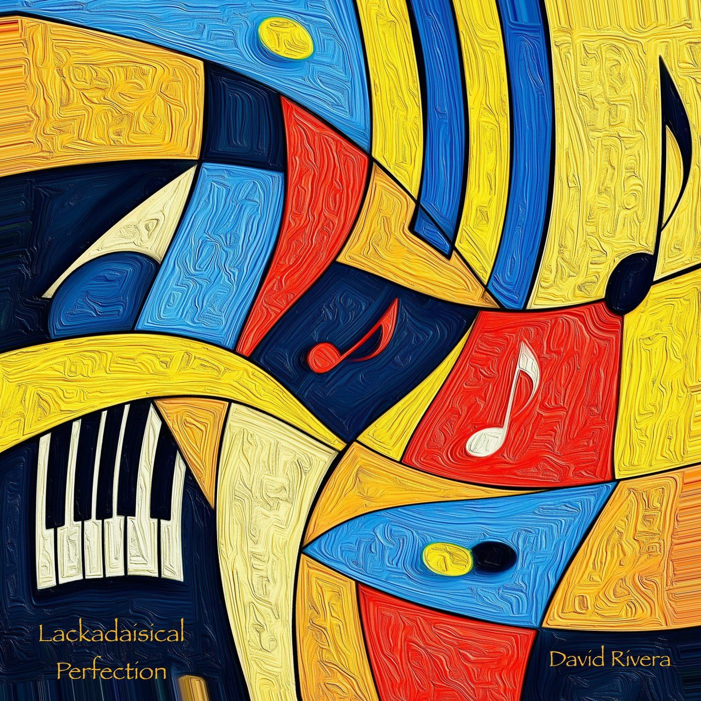

Lackadaisical Perfection
Album · January 8, 2027 · piano
Eleven new pieces; three singles before the album. Anxious tranquility, a voyage, a tapestry of whispers, luminescent dreams.
I’m David Rivera. Neoclassical composer. Seven piano and ambient albums that fuse minimalism and electronica. The music is piano at heart. Subtle melodies for overlooked moments. Music that rewards a closer listen. For fans of Ludovico Einaudi, Ólafur Arnalds, Max Richter, Nils Frahm, Yann Tiersen, George Winston, The Piano Guys, Philip Glass and Erik Satie.
Lackadaisical Perfection is my new album, out January 8, 2027.
Be on the lookout.
- Tapestry of WhispersOut now · Spotify · Apple Music · YouTubeNew · October 16
- Luminescent DreamsNovember 6, 2026
- Lackadaisical PerfectionNovember 27, 2026
- Full albumJanuary 8, 2027
Tapestry of Whispers is out now. Listen links for the next releases will appear here on each street date.
The pieces
- 1Anxious TranquilityClose your eyes and this piece will transport you; twice, from a slow E minor dream into a D minor scape. Continuous arpeggios, a bit restless, and yet, even. (2:38)
- 2Tapestry of WhispersDelicate notes are whispers that form our thoughts. Music weaves who we become. E minor, 115. (2:28)
- 3Epic VoyageThe voyage is epic, not tranquil, maybe a bit anxious, as all adventures are. It is a C minor piece traveling at 130 bpm. (3:28)
- 4Malbec SilenceMalbec Silence opens with cascading scales that settle into a tranquil, arpeggiated prelude before an Andalusian theme emerges in Phrygian colors. Over seven unhurried minutes, in free tempo yet always melodic, the piano asks and answers, suspends and resolves, with the felt and pedal breathing through the quiet moments, until it closes on grand, sweeping chords. Spanish piano with a hint of Moorish mystery. (7:13)
- 5Mellowitude in ThreeWhen alone you may crave a quiet mellowitude in three. Playful, simple, clean. Clear thoughts, reminiscing solitude. C major. The tempo moves ever so slightly between 173 and 181. (2:14)
- 6Fugacious EternityEternity is gone in an instant. Let this piano and an orchestra of ethereal instruments accompany you for a moment. D minor, 110. (5:12)
- 7Drops of HesitationEach note hesitates, like a drop wondering where it will fall. And so, timid drop by timid drop, we fill the river of life. G minor, wavering tempo. (3:44)
- 8Absurd ExpectationThis beautiful and simple piano melody is small and perfect. It is an absurd expectation. F# minor at 145. (1:59)
- 9Lackadaisical PerfectionSimple, sweet, and pure. An innocent melody with a fragile heart. It lackadaisically falls into perfection. F major at 90. (2:44)
- 10Fortuitous DiscoveryA piano song is found by a quiet stroke of fortune. And so, all harmonizes. A minor, slow and free. (3:39)
- 11Luminescent DreamsOrganic instruments with synthesizer textures, unfolding like a lucid dream through melancholy, a little hope, and introspection. A minor, largo waltz. (4:38)
The other albums
- Melodic Subtlety · minimalist piano
- Piano In Colors · expressive neoclassical
- Tantalizing Proof · quiet, insistent piano
- Clean Calm Piano · intimate piano
- Where In The World Is Diane · travel-inspired piano
- Smitten with the Muses · beguiling piano
- Piano Reveries and Phantasies · contemplative works